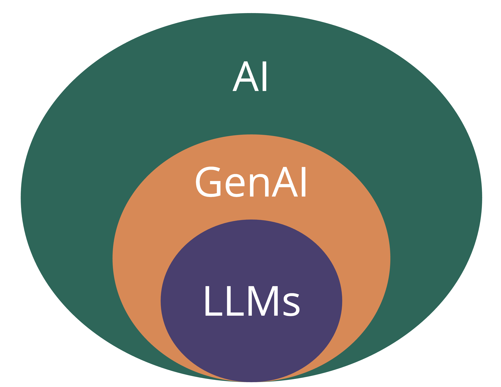
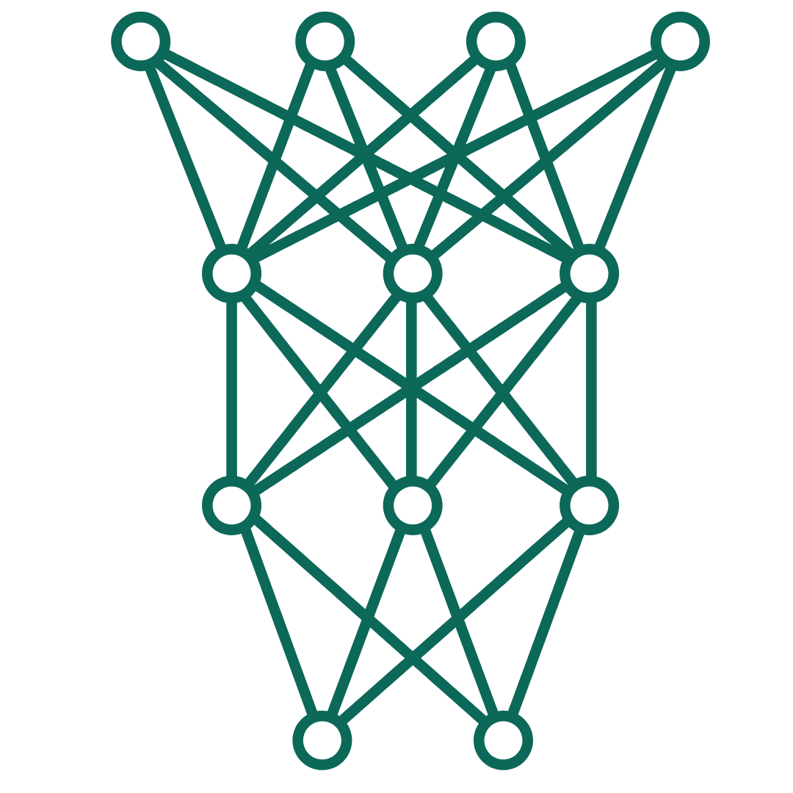

Before we get started…
Go to burl.live/stat to provide the words or phrases you think of when you hear “statistical thinking.”

AI and Data Work
Kelly McConville
DATA 100
Week 14 | Spring 2026
Announcements
- Oral exam sign-ups will be released right after class on Slack
- Extra Credit Lecture Quiz: Due In-Person at 3pm (start of lab) on Friday, May 1st
- Exam Rewrites: Due on Gradescope at noon on Monday, March 4th
Goals for Today
- Statistical thinking
- Revisit course learning objectives
- AI and data work
What have we learned in DATA 100?
(Some of the) Course Learning Objectives
Learn how to analyze data in
R.Master creating graphs with
ggplot2.Apply data wrangling operations with
dplyr.Translate a research problem into a set of relevant questions that can be answered with data.
Reflect on how sample design structures impact potential conclusions.
Appropriately apply and draw inferences from a statistical model, including quantifying and interpreting the uncertainty in model estimates.
Develop a reproducible workflow using
RQuarto documents.
This class has focused on developing our data skills. Now let’s shift our focus to AI’s impact on data work.
Terms, Terms, Terms

AI = artificial intelligence
- Models that try to predict outcomes.
GenAI = AI models that produce text, images, and videos in response to prompts.
LLMs = large language models
- Can produce text that is very similar to human written text.
How are LLMs so good at producing human-like text?

- Use neural networks, a very flexible type of AI model.
- Built on very, very large datasets.
- Think “the internet”.
AI and the Classroom
“AI promises compelling benefits—such as saving time in busy lives and helping your work to appear more creative or clever—but there are many important but invisible tradeoffs in using it, especially in the classroom. Therefore, at least in school, there’s good reason not to use or rely on AI/LLMs while you’re still learning new skills and growing as a person, even if it’s ok to use it in future jobs where producing work is more important than learning.” – Patrick Lin, Philosophy Professor at Cal Poly
Fluency isn’t Truth
Output from AI models sounds human-like.
People often believe it is true.
- The model is just a predictive engine.
Lots of examples of hallucinations!
- Citations
- Medical dosages
- Code
Need to always have a human verify output!
Ethical use of GenAI
You evaluate the relevance, usefulness, and accuracy of GenAI outputs.
You understand the potential harms of GenAI.
- On the environment (e.g., data centers)
- On the labor market (especially entry-level jobs).
- On society (eg., facial recognition software, revenge porn, deepfakes).
You examine the privacy and data security risks of GenAI.
You credit GenAI contributions in your work through appropriate citations.
Developing your Data & AI Literacy at Bucknell
About developing reasoning
- Not just learning definitions and formulae
- Not just memorizing arbitrary rules (p-value \(<\) 0.05, sample size \(>\) 30)
- Consider the appropriateness of AI for the task at hand.
Requires judgment that takes time to develop
- Consider taking DATA 101: Foundations of AI!
AI Skills to Develop
XXX: insert graph of AI skills from advisory board
How is AI impacting data work?
Vibe coding
- Vibe coding is where an AI tool generates code based on prompts from a person.
- Important skills to develop:
- Ability to review and debug the AI generated code.
- Ability to prompt the AI tool for better code.
- A strong understanding of what you want the AI code to produce.
- Don’t let it take you down the wrong rabbit hole.
- Taste! Don’t produce AI slop (i.e., generic, vanilla graphs).
Setting up pipelines for engaging with LLMs in a structured way and using the model output
- The
ellmerpackage is great for this! - Asking LLMs to output responses into a dataframe so they are easier to analyze.
- Important skills to develop:
- Ability to evaluate the AI output.
- Ability to engage with an LLM in
Rand not just via chatbots.
Increasing efficiency by incorporating AI into time-intensive steps of the research process.
- Example:
- Detecting dance movements in children
- Important skills to develop:
- Understanding what steps AI can actually speed up.
- Comparing the AI output to the human output.